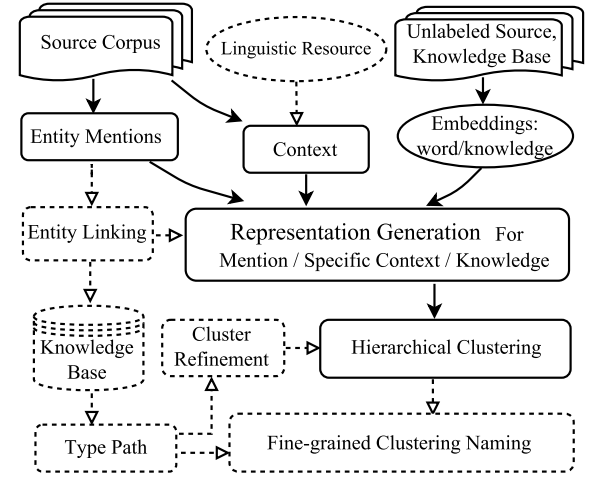
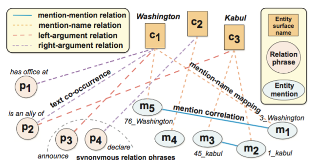
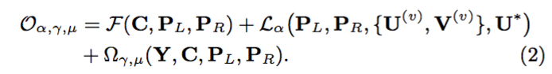
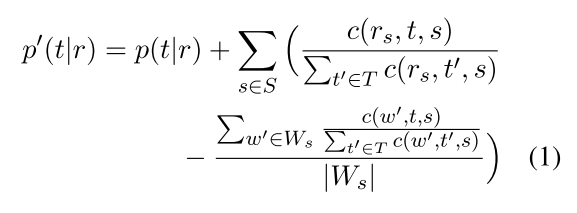
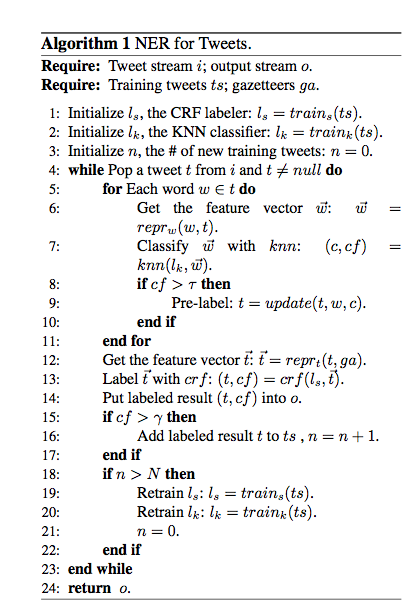

PaperWeekly 第十七期
引言
命名实体识别是自然语言处理中一个非常基础的工作，是自然语言处理中关键的一个环节。监督学习是解决命名实体识别的一个基本手段，但标注数据的获取成本往往会比较高，本期PaperWeekly将带大家来看一下如何通过半监督或者无监督的方法来做命名实体识别任务。本期分享的4篇Paper Notes分别是：
1、Building a Fine-Grained Entity Typing System Overnight for a New X (X = Language, Domain, Genre), 2016
2、ClusType: Effective Entity Recognition and Typing by Relation Phrase-Based Clustering, 2015
3、Bootstrapped Text-level Named Entity Recognition for Literature, 2016
4、Recognizing Named Entities in Tweets, 2011
Building a Fine-Grained Entity Typing System Overnight for a New X (X = Language, Domain, Genre)
作者
Lifu Huang, Jonathan May, Xiaoman Pan, Heng Ji
单位
Rensselaer Polytechnic Institute,
Information Sciences Institute,
Rensselaer Polytechnic Institute
关键词
Entity Recognition and Typing, Unspuversied
文章来源
arXiv, 2016
问题
细粒度的实体识别是这几年比较流行的工作。传统的方法是需要先预定义一组实体所属类型，随后使用大量的标注数据来训练多分类器。本文针对需要标注数据的问题，提出了一个使用非监督学习的思路来解决这个问题
模型
本文中方法的架构如下图:

1）通过entity mention的语料，构建entity mention的context
2）随后构建知识库的表达
3）通过知识库和entity mention进行连接
4）将连接后的数据学习三种表达
- a general entity distributed representation
- a specific context representation
- a knowledge representation
其中entity distributed representation主要是通过上下文来表达实体。
而 a specific context representation主要是表达一些local feature和一些语言结构的特征。
最后a knowledge representation主要是用来模拟领域相关的知识
最后算法通过一个层次聚类算法来获取entity mention可能的分类信息
1、General Entity Representation
entity mention的表达作者主要是用了Skip-gram model通过大量的语料来训练，最终可以得到每个entity mention的表达。这个思路的好处是让两个entity mention属于同一类型时，entity mention的上下文会比较相似，进而可以得到相似的分布式表达
2、a specific context representation
为了得到a specific context representation，本文使用AMR（(Abstract Meaning Representation）语法或者句法结构的上下文。
其生成的结构如下图所示。根据给定的entity mention以及对应关系，首先选择entity mention可能的类型，如关系为ARG0 capital of ARG1则ARG0可能的类型则为国家，同理ARG1可能的类型为城市。随后将所有entity mention可能的候选类型通过一个encoder-decoder模型得到一个单一的表达

3、Knowledge Representation
由于entity mention的类型在很多情况是非常依赖领域相关的知识库的。因此本文也对知识库进行建模，从而推断出在某个相关领域下更细粒度的实体。为例计算Knowledge Representation，首先对entity mention跟知识库做连接。随后根据链接的实体和实体对应的属性以及类型信息构建一个基于权重的二步图。构建好的二步图根据 Large-scale information network embedding算法来对这个二步图训练并得到其分布式表达。
最后对于一个entity mention，将该entity mention对应的三种表达General Entity Representation，a specific context representation和Knowledge Representation整合，通过一个hierarchical X-means clustering算法得到这个entity mention在一个分类体系下的type信息。最终完成识别实体类型的信息。
简评
细粒度的实体识别是这几年比较流行的工作。传统的方法是需要先预定义一组实体所属类型，随后使用大量的标注数据来训练多分类器。这篇文章的创新点是提出了一个非监督学习的算法来识别实体所属的type，这种非监督的方法在缺少标注数据的垂直领域具有一定的实用性。本文的思路主要是通过文章中的entity mention跟知识库进行连接，通过文章的上下文学习entity mention的分布式表达，同时通过学习知识库中实体和类型的分布式表达。最后将这些表达送入一个层次聚类算法，entity mention得到的embedding和相似的知识库符号embedding会聚到同一个聚类下。进而通过非监督的方法对entity mention打上type的标签。实验证明本文的方法可以跟监督学习起到类似的效果。
ClusType: Effective Entity Recognition and Typing by Relation Phrase-Based Clustering
作者
Xiang Ren, Ahmed El-Kishky, Chi Wang, Fangbo Tao, Clare R. Voss, Heng Ji, Jiawei Han
单位
University of Illinois at Urbana-Champaign,
Microsoft Research, Redmond,
Rensselaer Polytechnic Institute,
Army Research Laboratory, Adelphi
关键词
Entity Recognition and Typing,
Relation Phrase Clustering
文章来源
KDD, 2015
问题
远程监督方法在特定领域的实体抽取方面存在领域扩展性差、实体歧义问题以及上下文稀缺三大问题，本文主要研究如何改进这三个问题。
模型
针对上述的三个问题，本文提出了各自对应的解决思路：只使用浅层的分析方法例如POS等解决领域独立性问题；对entity mention(token span in the text document which refers to a real-world entity)应用词形和上下文联合建模来解决歧义问题；挖掘relation phrase和entity mention的共现情况，利用relation phrase前后实体（主语和宾语）的类别来找到相同的关系，进而辅助实体类型的推断。基于上述的思路，本文提出了ClusType的方法。
ClusType的问题定义如下：给定一个特定领域的文档集合，一个实体类型集合以及一个知识库，主要完成三个任务：第一，从文档集合中抽取出候选的entity mention集合；第二，将一部分entity mention链接到知识库，作为种子entity mention集合；第三，对于剩余未完成知识链接的entity mention集合，预测每一个entity mention的对应实体类别。
根据任务的定义，整个框架也分为三个部分，分别解决这三个任务。
本文方案的具体思路如下：
1、构建关系图
关系图的基本样式如下：

图当中的节点主要分为三种：entity mention, surface name, relation phrase.
图中的边的类型也有三种：entity mention和surface name的关系、surface name和relation phrase在语料中的共现情况、entity mention和entity mention的关系，表现entity mention之间的相似程度。这三个关系均是通过邻接矩阵的形式表示。
关于三种要素的确定，relation phrase的确定主要参考开放域抽取的方法，entity mention的确定方法也比较简单：首先找到固定长度的一个频繁词串集；为集合中每一个词串计算两两之间的得分，得分越高证明越需要合并；在合并的过程中，利用贪心算法，从得分最高开始合并，直到所有得分均低于某一阈值。
2、种子集合的生成
这里利用了dbpedia-spotlight工具进行entity mention到知识库的映射，只选取置信度得分高于0.8的作为有效输出。
3、实体类型推断
目标函数如下：

公式共分为三部分：
第一部分遵循实体关系共现假设：如果一个surface name经常在relation phrase前后出现，那么它的类型应该同relation phrase前后实体的类型相关。
第二部分遵循两个假设。
假设一：如果两个relation phrase相似，那么他们前后实体的类型也应该相似；
假设二：判断两个relation phrase相似的特征为词形、上下文和其前后实体的类型。
因此，第二部分的作用在于根据两个假设建模一个基于joint non-negative matrix factorization的multi-view clustering.
第三部分就是建模entity mention对应实体类别、entity mention之间的关系以及引入种子集合的监督，利用一个entity mention的surface name和relation phrase对应的关系类别推断关系类型，同时考虑到相似entity mention的一致性以及对于种子集合的预测误差函数。
相关工作
本文主要借鉴两方面的工作，一部分是远距离监督的方法，另一部分是开放关系抽取。
远距离监督的工作主要有：
1、N. Nakashole, T. Tylenda, and G. Weikum. Fine-grained semantic typing of emerging entities. In ACL, 2013.
2、T. Lin, O. Etzioni, et al. No noun phrase left behind: de- tecting and typing unlinkable entities. In EMNLP, 2012.
3、X. Ling and D. S. Weld. Fine-grained entity recognition. In AAAI, 2012.
开放关系抽取的工作主要有：
1、A. Fader, S. Soderland, and O. Etzioni. Identifying relations for open information extraction. In EMNLP, 2011.
简评
本文通过对于远程监督方法的缺陷分析，提出了一种基于关系短语的实体识别方法。同时，还提出了一个领域无关的生成relation phrase和entity mention。通过将关系短语的聚类和实体类型的识别联合建模，可以在解决实体歧义和上下文问题上发挥很大的作用，而且可以根据entity mention的surface name和relation phrase预测关系类型。同时，我个人认为，将实体识别和关系识别进行联合建模可以起到一个相互促进的作用，而且可以很好的避免在这两个任务当中引入深度语法分析的工具如依存、句法分析等，减少误差积累和领域依赖性。未来两种任务结合依旧是一个很好的研究方向和热点。
Bootstrapped Text-level Named Entity Recognition for Literature
作者
Julian Brooke，Timothy Baldwin，Adam Hammond
单位
English and Comparative Literature San Diego State University
Computing and Information Systems The University of Melbourne
关键词
NER，Brown clustering，Text-level context classifier
文章来源
ACL2016
问题
在无标注数据的情况下，对Literature做命名实体识别
模型
模型主要分为四个部分：
1、Corpus preparation and segmentation
使用GutenTag tool对语料做基本的名称切分
2、Brown clustering
在预先切分好的预料上做Brown clustering。根据Brown clustering的聚类中的每个类的rank值，将聚类结果分成三个类别（PERSON，LOCATION，catch- all category）并将其作为Bootstrap的种子进行训练。
3、Text-level context classifier
为了解决Brown clustering聚类结果可能出现的一些confusion，引入了Text-level context classifier的思想。构建名称特征向量，将种子集数据放到LR模型中进行训练，得到分类模型。
4、Improved phrase classification
为解决模型对短语名词分类不准确问题，引入了改进的短语名称分类方法，在LR模型得到的p(t|r)值的基础上进一步对其优化得到修正的p’(t|r) ，修正方法如下：

资源
1、dataset：https://www.gutenberg.org
2、GutenTag tool：http://www.projectgutentag.org
相关工作
在Literature上做NER任务的工作包括：
1、(He et al., 2013)character speech identification
2、(Bamman et al., 2014)analysis of characterization
3、(Vala et al., 2015)character identification
4、(Vala et al. 2015)character identification deal the multiple aliases of the same character problem
简评
本文的创新点在于，使用了无监督学习模型对特定领域(fiction)知识做NER，并取得了很好的效果。但是本文方法主要研究特定领域知识的NER，因此本方法使用在跨领域跨语言的NER识别任务中并不能达到很好的效果，方法具有一定的局限性。
Recognizing Named Entities in Tweets
作者
Xiaohua Liu, Shaodian Zhang, Furu Wei, Ming Zhou
单位
Harbin Institute of Technology,
Shanghai Jiao Tong University,
Microsoft Research Asia
关键词
Named Entity Recognition, Semi-Supervised Learning
文章来源
ACL, 2011
问题
如何建立一种半监督学习的模型对使用非正式语言的tweet进行命名实体识别？
模型
现有的分词、词性标注、NER工具解决非正式语言占主导的tweet时常常会失效，得不到令人满意的结果，而twitter作为一种主流的社交媒体，有着丰富的语料和非常高的研究价值。本文以tweet为研究对象，提出了一种基于bootstrapping的半监督学习方案。
tweet的NER任务包括四类实体：Person、Location、Organization和Product，标注方法用BILOU标注法，而没有用经典的IOB标注法。
本文方案的具体思路如下：

1、KNN分类器
将tweet中的每个词用词袋模型表示，输入到KNN中得到一个分类标签，这个标签作为CRF标注时的输入。
2、CRF标注器
NER是一个典型的序列标注任务，CRF是解决序列标注问题的一个典型方法。
3、训练过程：
（1）先根据已有标注数据，训练好初始的KNN和CRF模型。
（2）获得未标注的tweet，每条tweet中的每个词都经过KNN分类器，得到一个分类标签和相应的概率，如果这个概率大于预设阈值，则更新这个标签给该词。整个tweet经过KNN之后，作为特征输入到CRF模型中进行预测，如果预测出的结果概率大于预设阈值，则认为该标注结果可靠，加入可靠结果集中。
（3）当可靠结果集的数量达到N=1000时，则重新训练KNN和CRF模型，并且清空可靠结果集，继续（2）的过程。
相关工作
基于bootstrapping做NER任务的工作还包括：
1、Instance weighting for domain adaptation in nlp, 2007
2、Domain adaption bootstrapping for named entity recognition, 2009
简评
本文是比较早的文章了，算是比较早地探索tweet文本挖掘。bootstrapping是一种经典的半监督学习方法，通过从大量的非标注文本中进行学习和补充，来提高训练数据集的规模。tweet是一种非正式语言的文本，现有的NLP工具基本上都不好用，包括微博、论坛的文本都面临这样的问题，而且这样的文本占据着更大的比重，非常有必要对类似的文本进行NLP工具的研究，大概想了两种思路，要么专门地来研究一套适合这种非正式文本的工具，要么想办法将这样的文本转化为正式的语言，用现有的工具来解决问题。现在很火的chatbot对话理解也面临这样的问题，大家在和bot对话的时候说的话也是类似的非正式语言，如何准确理解和分析这类话，对于chatbot能否真的被应用至关重要。
总结
NER的应用场景非常广泛，基于监督学习的训练方法是最简单、最有效的方法，但在实际应用中常常会遇到训练数据难以获得的尴尬境地，那么半监督和无监督学习的研究正是为了解决这个问题，值得关注！感谢@高桓 @韩其琛 @min279 @zhangjun 四位童鞋的辛勤工作。